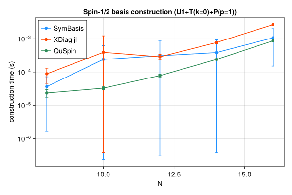
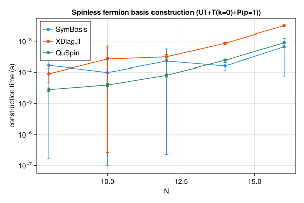
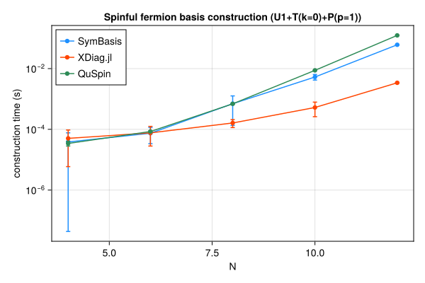
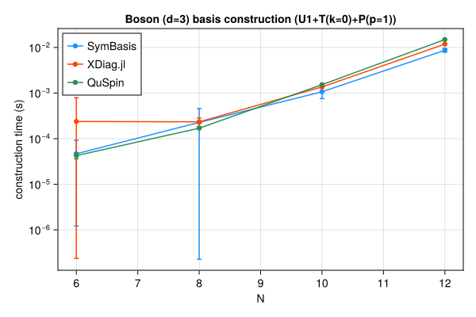

Symmetry-resolved basis construction and representative-state lookup speed, compared against XDiag.jl and QuSpin. SymBasis is benchmarked against its own dev checkout; XDiag.jl and QuSpin are whatever their latest released versions were at the time this page was generated. Regenerated automatically on every SymBasis release.
Threads are left at each library's own defaults (JULIA_NUM_THREADS=auto, OMP_NUM_THREADS unset) rather than pinned to 1 – these numbers reflect out-of-the-box performance, not a strictly single-threaded comparison.
Sweep: BENCH_SWEEP=quick
plot_construction("spin", "Spin-1/2")

| N | config | dim | SymBasis | XDiag | QuSpin | XDiag/SymBasis | QuSpin/SymBasis |
|---|
| 8 | U1 | 70 | 5.726e-05 ± 0.00012 s | 5.405e-06 ± 9.6e-06 s | 1.833e-05 ± 1e-05 s | 0.09x | 0.32x |
| 8 | U1+T(k=0) | 10 | 3.736e-05 ± 3.7e-05 s | 4.599e-05 ± 3.9e-05 s | 1.999e-05 ± 5.4e-06 s | 1.23x | 0.54x |
| 8 | U1+T(k=0)+P(p=1) | 8 | 3.689e-05 ± 3.5e-05 s | 8.852e-05 ± 4.2e-05 s | 2.392e-05 ± 6e-06 s | 2.40x | 0.65x |
| 10 | U1 | 252 | 0.0001152 ± 0.0002 s | 5.009e-06 ± 9.6e-06 s | 1.609e-05 ± 3.7e-06 s | 0.04x | 0.14x |
| 10 | U1+T(k=0) | 26 | 4.004e-05 ± 4.1e-05 s | 0.0001894 ± 0.00041 s | 2.848e-05 ± 6e-06 s | 4.73x | 0.71x |
| 10 | U1+T(k=0)+P(p=1) | 16 | 0.0002396 ± 0.00039 s | 0.0003921 ± 0.00082 s | 3.321e-05 ± 3.1e-06 s | 1.64x | 0.14x |
| 12 | U1 | 924 | 4.4e-05 ± 4.1e-05 s | 5.383e-06 ± 9.6e-06 s | 2.113e-05 ± 2.5e-06 s | 0.12x | 0.48x |
| 12 | U1+T(k=0) | 80 | 8.432e-05 ± 6.8e-05 s | 0.0001707 ± 3.2e-05 s | 5.384e-05 ± 4.1e-06 s | 2.02x | 0.64x |
| 12 | U1+T(k=0)+P(p=1) | 50 | 0.0003091 ± 0.00054 s | 0.0002878 ± 4.9e-05 s | 7.824e-05 ± 7.3e-06 s | 0.93x | 0.25x |
| 14 | U1 | 3432 | 0.0005372 ± 0.001 s | 5.839e-06 ± 9.1e-06 s | 3.882e-05 ± 4.3e-06 s | 0.01x | 0.07x |
| 14 | U1+T(k=0) | 246 | 0.0001993 ± 0.00024 s | 0.000581 ± 5.5e-05 s | 0.0001592 ± 7.2e-06 s | 2.92x | 0.80x |
| 14 | U1+T(k=0)+P(p=1) | 133 | 0.0003857 ± 0.00054 s | 0.000768 ± 5.4e-05 s | 0.0002391 ± 7e-06 s | 1.99x | 0.62x |
| 16 | U1 | 12870 | 0.0005059 ± 0.00049 s | 7.968e-06 ± 1.1e-05 s | 9.977e-05 ± 5.6e-06 s | 0.02x | 0.20x |
| 16 | U1+T(k=0) | 810 | 0.000447 ± 0.00038 s | 0.002121 ± 6.6e-05 s | 0.0005458 ± 7.9e-06 s | 4.74x | 1.22x |
| 16 | U1+T(k=0)+P(p=1) | 440 | 0.001063 ± 0.00091 s | 0.002613 ± 8.9e-05 s | 0.0008648 ± 8.8e-06 s | 2.46x | 0.81x |
| N | config | nsamples | SymBasis | XDiag | QuSpin |
|---|
| 16 | U1+T(k=0)+P(p=1) | 10000 | 8.936e-08 ± 2.7e-09 s | N/A (no decoupled API) | 1.543e-07 ± 1.4e-09 s |
plot_construction("fermion", "Spinless fermion")

| N | config | dim | SymBasis | XDiag | QuSpin | XDiag/SymBasis | QuSpin/SymBasis |
|---|
| 8 | U1 | 70 | 3.157e-05 ± 4.1e-05 s | 5.29e-06 ± 9.4e-06 s | 2.066e-05 ± 7.6e-06 s | 0.17x | 0.65x |
| 8 | U1+T(k=0) | 9 | 3.807e-05 ± 3.8e-05 s | 0.0002065 ± 0.00056 s | 2.617e-05 ± 6.2e-06 s | 5.43x | 0.69x |
| 8 | U1+T(k=0)+P(p=1) | 6 | 0.0001654 ± 0.00037 s | 8.914e-05 ± 4.1e-05 s | 2.734e-05 ± 3.7e-06 s | 0.54x | 0.17x |
| 10 | U1 | 252 | 0.0001161 ± 0.00023 s | 5.642e-06 ± 9.6e-06 s | 2.027e-05 ± 3e-06 s | 0.05x | 0.17x |
| 10 | U1+T(k=0) | 26 | 4.075e-05 ± 3.4e-05 s | 7.681e-05 ± 3.3e-05 s | 3.173e-05 ± 2.5e-06 s | 1.88x | 0.78x |
| 10 | U1+T(k=0)+P(p=1) | 16 | 9.79e-05 ± 0.00019 s | 0.000265 ± 0.00043 s | 3.877e-05 ± 4.4e-06 s | 2.71x | 0.40x |
| 12 | U1 | 924 | 4.45e-05 ± 4.1e-05 s | 6.079e-06 ± 9.3e-06 s | 2.522e-05 ± 2.7e-06 s | 0.14x | 0.57x |
| 12 | U1+T(k=0) | 76 | 0.0002325 ± 0.00046 s | 0.0002005 ± 4.1e-05 s | 6.136e-05 ± 4.3e-06 s | 0.86x | 0.26x |
| 12 | U1+T(k=0)+P(p=1) | 33 | 0.0002262 ± 0.00033 s | 0.0003111 ± 5.6e-05 s | 7.96e-05 ± 9.2e-06 s | 1.38x | 0.35x |
| 14 | U1 | 3432 | 8.363e-05 ± 3.5e-05 s | 6.202e-06 ± 8.8e-06 s | 4.055e-05 ± 3.9e-06 s | 0.07x | 0.48x |
| 14 | U1+T(k=0) | 246 | 0.0003054 ± 0.00051 s | 0.0006634 ± 4.6e-05 s | 0.0001596 ± 3.7e-06 s | 2.17x | 0.52x |
| 14 | U1+T(k=0)+P(p=1) | 113 | 0.0001571 ± 4.5e-05 s | 0.0008572 ± 5.6e-05 s | 0.0002415 ± 5.5e-06 s | 5.46x | 1.54x |
| 16 | U1 | 12870 | 0.0005524 ± 0.00058 s | 9.57e-06 ± 1.2e-05 s | 0.0001022 ± 5e-06 s | 0.02x | 0.18x |
| 16 | U1+T(k=0) | 809 | 0.0003556 ± 0.00018 s | 0.002674 ± 4.1e-05 s | 0.0005466 ± 1.2e-05 s | 7.52x | 1.54x |
| 16 | U1+T(k=0)+P(p=1) | 422 | 0.0006582 ± 0.00058 s | 0.003123 ± 7.1e-05 s | 0.0008895 ± 1.1e-05 s | 4.75x | 1.35x |
| N | config | nsamples | SymBasis | XDiag | QuSpin |
|---|
| 16 | U1+T(k=0)+P(p=1) | 10000 | 1.324e-07 ± 2.1e-08 s | N/A (no decoupled API) | 1.444e-06 ± 1.6e-08 s |
plot_construction("spinful_fermion", "Spinful fermion")

| N | config | dim | SymBasis | XDiag | QuSpin | XDiag/SymBasis | QuSpin/SymBasis |
|---|
| 4 | U1 | 36 | 0.000147 ± 0.0003 s | 6.925e-06 ± 1.2e-05 s | 2.467e-05 ± 9.1e-06 s | 0.05x | 0.17x |
| 4 | U1+T(k=0) | 10 | 0.0001069 ± 0.00019 s | 3.346e-05 ± 4.1e-05 s | 2.862e-05 ± 6.3e-06 s | 0.31x | 0.27x |
| 4 | U1+T(k=0)+P(p=1) | 6 | 3.834e-05 ± 3.8e-05 s | 5.043e-05 ± 4.5e-05 s | 3.431e-05 ± 6.1e-06 s | 1.32x | 0.89x |
| 6 | U1 | 400 | 4.799e-05 ± 3.9e-05 s | 5.873e-06 ± 1.2e-05 s | 2.725e-05 ± 3.5e-06 s | 0.12x | 0.57x |
| 6 | U1+T(k=0) | 68 | 5.257e-05 ± 4.1e-05 s | 4.146e-05 ± 3.9e-05 s | 5.807e-05 ± 4.7e-06 s | 0.79x | 1.10x |
| 6 | U1+T(k=0)+P(p=1) | 38 | 7.445e-05 ± 4.1e-05 s | 7.656e-05 ± 4.8e-05 s | 8.471e-05 ± 5.3e-06 s | 1.03x | 1.14x |
| 8 | U1 | 4900 | 0.0002193 ± 5.5e-05 s | 8.132e-06 ± 1.8e-05 s | 8.045e-05 ± 5.8e-06 s | 0.04x | 0.37x |
| 8 | U1+T(k=0) | 618 | 0.0003893 ± 0.00018 s | 0.0002275 ± 0.00053 s | 0.0004021 ± 7.3e-06 s | 0.58x | 1.03x |
| 8 | U1+T(k=0)+P(p=1) | 318 | 0.0006977 ± 0.00056 s | 0.0001619 ± 4.8e-05 s | 0.0006916 ± 1.1e-05 s | 0.23x | 0.99x |
| 10 | U1 | 63504 | 0.002103 ± 0.00021 s | 6.339e-06 ± 1.2e-05 s | 0.000797 ± 3.4e-05 s | 0.00x | 0.38x |
| 10 | U1+T(k=0) | 6352 | 0.003952 ± 0.00083 s | 0.0002071 ± 4.7e-05 s | 0.0052 ± 5.8e-05 s | 0.05x | 1.32x |
| 10 | U1+T(k=0)+P(p=1) | 3212 | 0.005284 ± 0.0011 s | 0.0005238 ± 0.00026 s | 0.00875 ± 3.5e-05 s | 0.10x | 1.66x |
| 12 | U1 | 853776 | 0.0232 ± 0.018 s | 7.081e-06 ± 1.3e-05 s | 0.01152 ± 0.00025 s | 0.00x | 0.50x |
| 12 | U1+T(k=0) | 71188 | 0.0368 ± 0.0023 s | 0.001457 ± 7.3e-05 s | 0.07198 ± 0.00048 s | 0.04x | 1.96x |
| 12 | U1+T(k=0)+P(p=1) | 35694 | 0.06081 ± 0.0019 s | 0.003406 ± 9.8e-05 s | 0.124 ± 0.00091 s | 0.06x | 2.04x |
| N | config | nsamples | SymBasis | XDiag | QuSpin |
|---|
| 12 | U1+T(k=0)+P(p=1) | 10000 | 1.088e-06 ± 2.5e-09 s | N/A (no decoupled API) | 1.738e-06 ± 3e-09 s |
plot_construction("boson", "Boson (d=3)")

| N | config | dim | SymBasis | XDiag | QuSpin | XDiag/SymBasis | QuSpin/SymBasis |
|---|
| 6 | U1 | 141 | 0.0001283 ± 0.00017 s | 5.732e-06 ± 9.4e-06 s | 2.843e-05 ± 9.7e-06 s | 0.04x | 0.22x |
| 6 | U1+T(k=0) | 26 | 5.874e-05 ± 5.3e-05 s | 0.0002097 ± 0.00055 s | 3.479e-05 ± 4.8e-06 s | 3.57x | 0.59x |
| 6 | U1+T(k=0)+P(p=1) | 18 | 4.673e-05 ± 4.6e-05 s | 0.000238 ± 0.00055 s | 4.248e-05 ± 6.2e-06 s | 5.09x | 0.91x |
| 8 | U1 | 1107 | 7.246e-05 ± 4.2e-05 s | 7.274e-06 ± 9.3e-06 s | 5.248e-05 ± 4.1e-06 s | 0.10x | 0.72x |
| 8 | U1+T(k=0) | 142 | 0.0001846 ± 0.00016 s | 0.000164 ± 3.3e-05 s | 0.0001401 ± 1.2e-05 s | 0.89x | 0.76x |
| 8 | U1+T(k=0)+P(p=1) | 84 | 0.0002272 ± 0.00023 s | 0.0002341 ± 4.9e-05 s | 0.0001699 ± 5.8e-06 s | 1.03x | 0.75x |
| 10 | U1 | 8953 | 0.0004379 ± 0.00042 s | 1.26e-05 ± 1.3e-05 s | 0.0002161 ± 7.1e-06 s | 0.03x | 0.49x |
| 10 | U1+T(k=0) | 902 | 0.0005946 ± 5.2e-05 s | 0.001169 ± 4.7e-05 s | 0.001164 ± 8.2e-06 s | 1.97x | 1.96x |
| 10 | U1+T(k=0)+P(p=1) | 486 | 0.001067 ± 0.00031 s | 0.001363 ± 5.1e-05 s | 0.00153 ± 1.7e-05 s | 1.28x | 1.43x |
| 12 | U1 | 73789 | 0.003298 ± 0.001 s | 2.787e-05 ± 1.4e-05 s | 0.001636 ± 1.2e-05 s | 0.01x | 0.50x |
| 12 | U1+T(k=0) | 6166 | 0.004928 ± 0.00066 s | 0.01059 ± 3.3e-05 s | 0.01146 ± 2.7e-05 s | 2.15x | 2.33x |
| 12 | U1+T(k=0)+P(p=1) | 3179 | 0.008687 ± 0.00083 s | 0.01185 ± 5.1e-05 s | 0.0149 ± 2.7e-05 s | 1.36x | 1.71x |
| N | config | nsamples | SymBasis | XDiag | QuSpin |
|---|
| 12 | U1+T(k=0)+P(p=1) | 10000 | 1.404e-06 ± 1.7e-08 s | N/A (no decoupled API) | 2.79e-07 ± 1.7e-09 s |